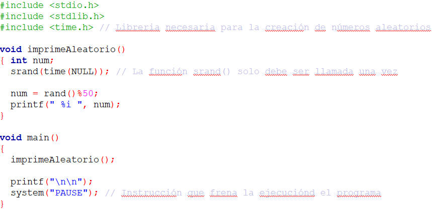

Objetivos:
- Que apliques los conocimientos sobre el ciclo for y do-while en le
desarrollo de un programa
- Que seas capaz de utilizar funciones y procedimientos, acompañados de
las estructuras "for" y "do while"
- Que desarrolles la habilidad de de hacer frente a los inconvenientes
del uso de estructuras cíclicas, es decir, en caso de que una función se
cicle, deberás ser capaz de identificar el elemento que provoca este mal
funcionamiento
- Que ejercites la habilidad de hacer frente a los mensajes de error
que envía la herramienta de desarrollo.

Forma de
trabajo:
Actividad individual

Tiempo
estimado:
90 minutos

Instrucciones:
- De manera individual escribe un programa en C para cada uno de los
ejercicios. Recuerda basarte en el algoritmo que se generó en el equipo.
- Una vez que hayas terminado tu programa, es tu responsabilidad ayudar
a tus compañeros de equipo a que terminen su programa.
- Entrega, vía la plataforma, los archivos *.c que contengan los
programas en C.
Utiliza los siguientes esquemas como apoyo para
desarrollar tu laboratorio:
- La función
rand( ) de la librería
<stdlib.h>, regresa un número
entero aleatorio (es decir, al azar) utilizando la operación
% x, para generar un número
entre 0 y
(x-1).
- El siguiente programa
despliega un número aleatorio entre 0 y 49. Utiliza esté código como
ejemplo para desarrollar la función numeros_aleatorios.

Ejercicios
Construye un
programa completo en C libre de warnings y errores, que incluya los
siguientes procedimientos y funciones, haciendo uso del ciclo for:
- El procedimiento aleatorios1,
que despliega en pantalla 40 números aleatorios entre 0
y 80.
- El procedimiento aleatorios2,
que despliega en pantalla 20 números aleatorios entre 20
y 90.
- El procedimiento aleatorios3,
que despliega en pantalla 30 números aleatorios entre -20
y 30.
- La funcióng que evalúe la siguiente sumatoria :
- El procedimiento imprimeNcadaVez,
que utilizando un do-while, desplegará en pantalla N números
consecutivos. Cada N números el procedimiento deberá preguntar al
usuario si desea continuar, de ser así seguirá con la impresión de la
secuencia de números siguientes en pantalla; en caso contrario termina el
procedimiento.
.
Por
ejemplo:
- Si N = 8,
imprimeNcadaVez(8); deplegará en pantalla lo siguiente:
1 2 3 4 5
6 7 8
Desea continuar (S/N): S
9 10 11 12 13 14 15 16
Desea continuar (S/N): S
17 18 19 20 21 22 23 24
Desea continuar (S/N): N
Fin del procedimiento....
- Si N = 5,
imprimeNcadaVez(5); deplegará en pantalla lo siguiente:
1 2 3 4 5
Desea continuar (S/N): S
6 7 8 9 10
Desea continuar (S/N): S
11 12 13 14 15
Desea continuar (S/N): N
Fin del procedimiento....
- El procedimiento menu, que despliegue el siguiente menú en pantalla:
MENU
.
a. Numeros aleatorios 1
b. Numeros aleatorios 2
c. Numeros aleatorios 3
d. Funcion G
e. ImprimeNcadaVez
s. Salir
.
- En la sección del "main()" construya un programa
completo en C que utilice el procedimiento menu y de acuerdo a la
opción seleccionada le dé la oportunidad al usuario de ejecutar
cualquiera de las funciones o procedimientos que han sido construidos.
Debes de utilizar el ciclo do-while y
el estatuto de control switch
para el desarrollo de un menú que incluya la opción de Salir, y cicle el
programa hasta que el usuario seleccione dicha opción.
- Recuerda que la captura de datos y validación de valores debe ser
realizada en la sección del "main ( )", pues las funciones NO pueden
realizar las tareas de validación o captura de datos.
- Guarda el archivo con el nombre F_matrícula.c

Especificaciones de entrega:
- Formato de entrega: c
- Nombre del entregable:
F_matrícula.c
- Medio de entrega:
Se entrega en Canvas en la sección de Laboratorio: For
Instrucciones para enviar tus archivos por Canvas:
- Haz clic en la actividad de
Laboratorio: For
- Haz clic en el botón de
Entregar tarea.
- En el fólder de Carga
del archivo, haz clic en el botón de Examinar
y localiza el archivo *.py. Si necesitas agregar más
archivos, haz clic en +Agregue otro archivo, haz
clic en el botón de Examinar y localiza el otro
archivo *.py.
- Cuando hayas terminado de
subir tus archivos, haz clic en el botón de Entregar
tarea y listo!!
|